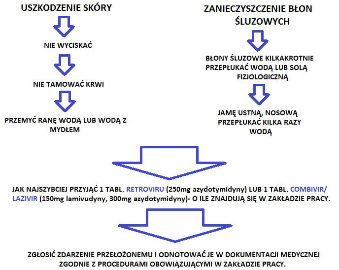

Warto wiedzieć, czyli o postępowaniu poekspozycyjnym
Ekspozycja zawodowa- to narażenie na zakażenie, głównie HBV, HCV, HIV, które występuje w momencie zranienia skóry skażonym ostrym przedmiotem ( igła, narzędzia chirurgiczne itp.) lub kontaktu błon śluzowych, czy uszkodzonej skóry (rany, stany zapalne, zranienia) z potencjalnie zakaźną krwią, tkankami lub płynami ustrojowymi pacjenta.
Postępowanie poekspozycyjne- obejmuje działania stosowane w celu zminimalizowania zakażenia wirusami HBV i HIV oraz monitorowanie trwające 6 miesięcy po ekspozycji, w celu wczesnego wykrycia zakażenia wirusem HBV, HCV lub HIV.
Eksponowany- osoba, która ulega ekspozycji.
Pacjent źródłowy (źródło ekspozycji)- osoba, na której krew lub inne wydzieliny był narażony eksponowany.
Materiał potencjalnie zakaźny- wydzieliny, w których zawarta jest wystarczająca ilość cząstek wirusa, mogąca wywołać zakażenie.
Materiałem zakaźnym jest: krew, płyn mózgowo- rdzeniowy, osierdziowy, opłucnowy, otrzewnowy, maziowy, owodniowy, ropa, oraz inne wydzieliny i wydaliny zanieczyszczone krwią.
Prawdopodobieństwo zakażenia po ekspozycji związanej z uszkodzeniem skóry wynosi: HBV - 30%, HCV – 5% - 15% , HIV – 0,3%.
TO JESZCZE NIE WSZYSTKO!
Ważne jest, aby po ekspozycji jeśli znane jest jej źródło zabezpieczyć krew do badań, w przypadku gdy nie jest to możliwe należy skierować źródło na badania do ośrodka specjalistycznego, który zajmuje się profilaktyką poekspozycyjną.
Jeśli osobą będąca źródlem ekspozycji jest przytomna powinna wyrazić na takie badania pisemną zgodę, w przypadku, gdy jest nim osoba poniżej 16 rż. powinni zrobić to opiekunowie prawni, a między 16, a 18 rż. zarówno opiekunowie jak i badany.
Badania w kierunku zakażenia HIV, HBV i HCV mogą być również przeprowadzone w macierzystym zakładzie pracy, ale ważne jest, aby nie opóźniły czasu od ekspozycji do wdrożenia profilaktyki.
Do ośrodka specjalistycznego najlepiej jest zgłosić się w ciągu 48h od ekspozycji, gdzie zostaną ocenione wskazania do profilaktyki i wdrożenia leczenia zakażenia HIV lub HBV. Nie zaleca się profilaktycznego leczenia po ekspozycji w kierunku HCV gdyż nie ma wiarygodnych danych, które wskazują na skuteczność immunoglobulin w profilaktyce tych zakażeń po ekspozycji.
Następnie trzeba wykonać badania eksponowanego, w których oznacza się:
→anty- HCV
→anty- HIV
→anty - HBc
→HBsAg
→anty- HBs (jeśli w przeszłości był szczepiony).
Do czasu zakończenia postępowania poekspozycyjnego należy niedopuściĆ do sytuacji, w których mogłoby dojść do zakażenia osób trzecich.
Każda osoba, która uległa ekspozycji na HIV powinna ostać objęta programem wizyt i badań kontrolnych niezależnie od tego czy przyjmuje profilaktycznie leki przeciwwirusowe. W celu ewentualnego wykrycia serokonwersji należy wykonywać badania na obecność przeciwciał anty- HIV metodą immunoenzymatyczną co najmniej kilka razy w okresie 6 miesięcy po ekspozycji, a w niektórych przypadkach ten okres trzeba wydłużyć do 12 miesięcy.